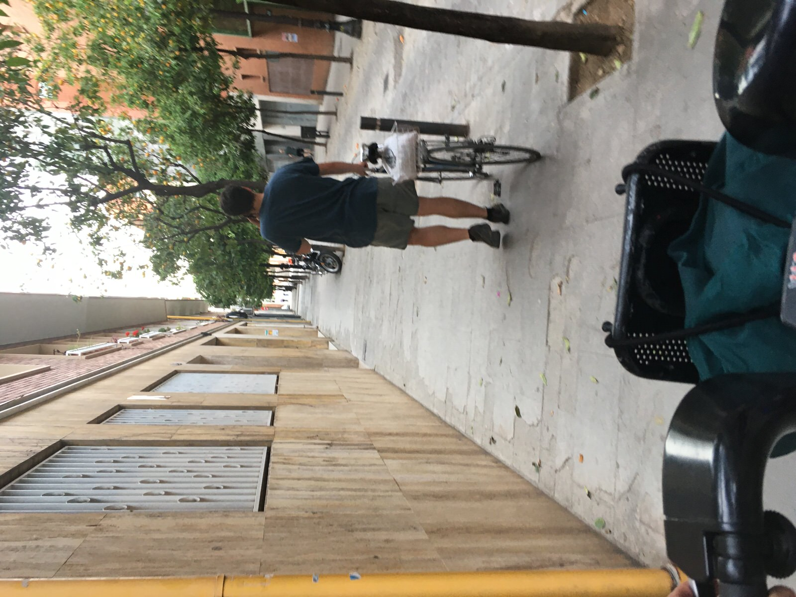
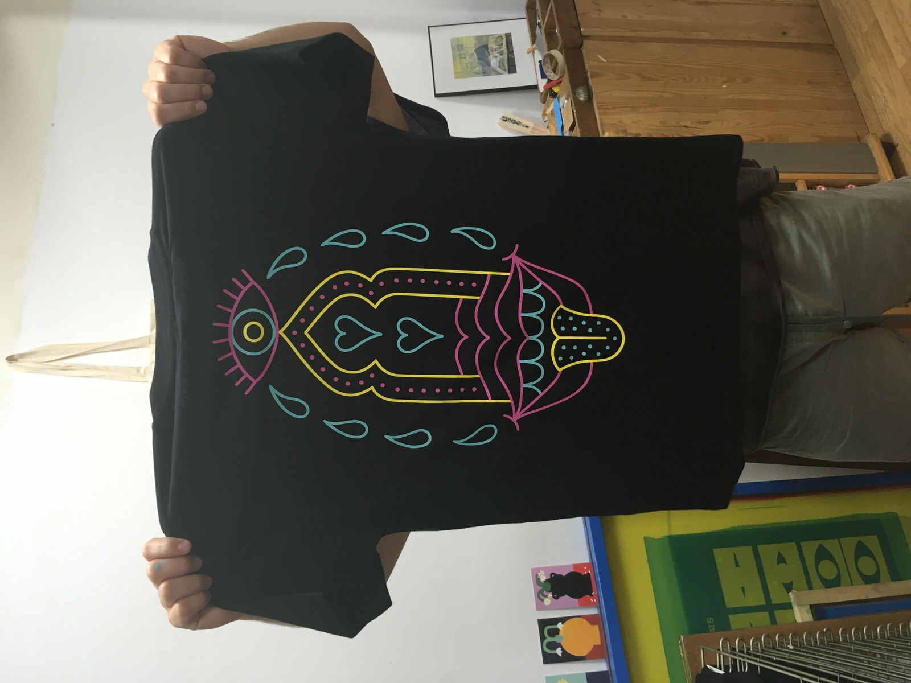
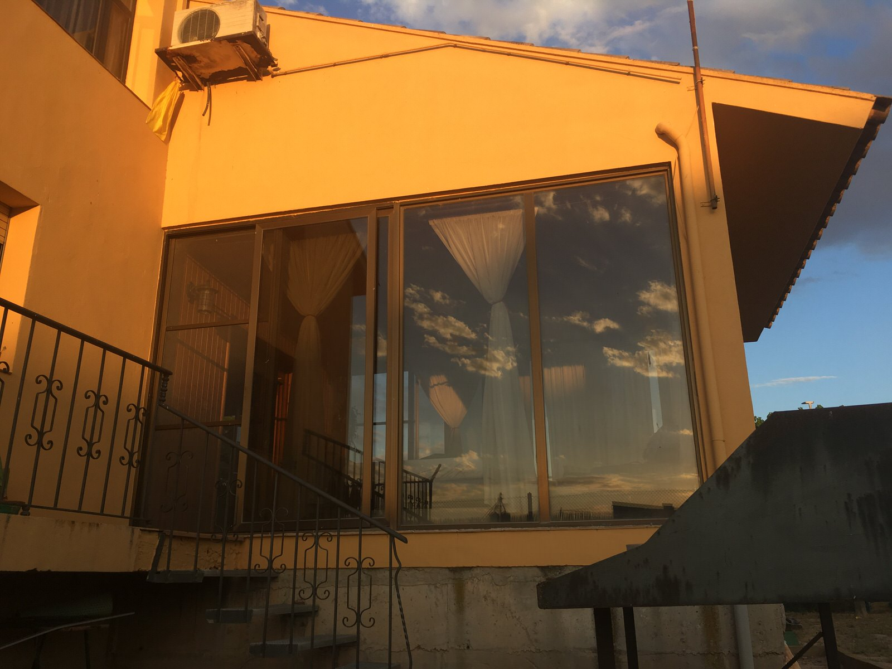
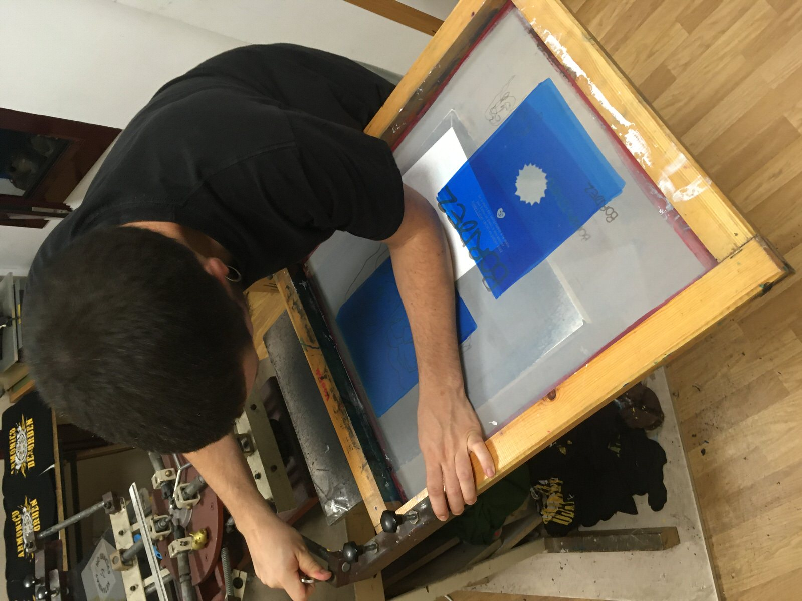
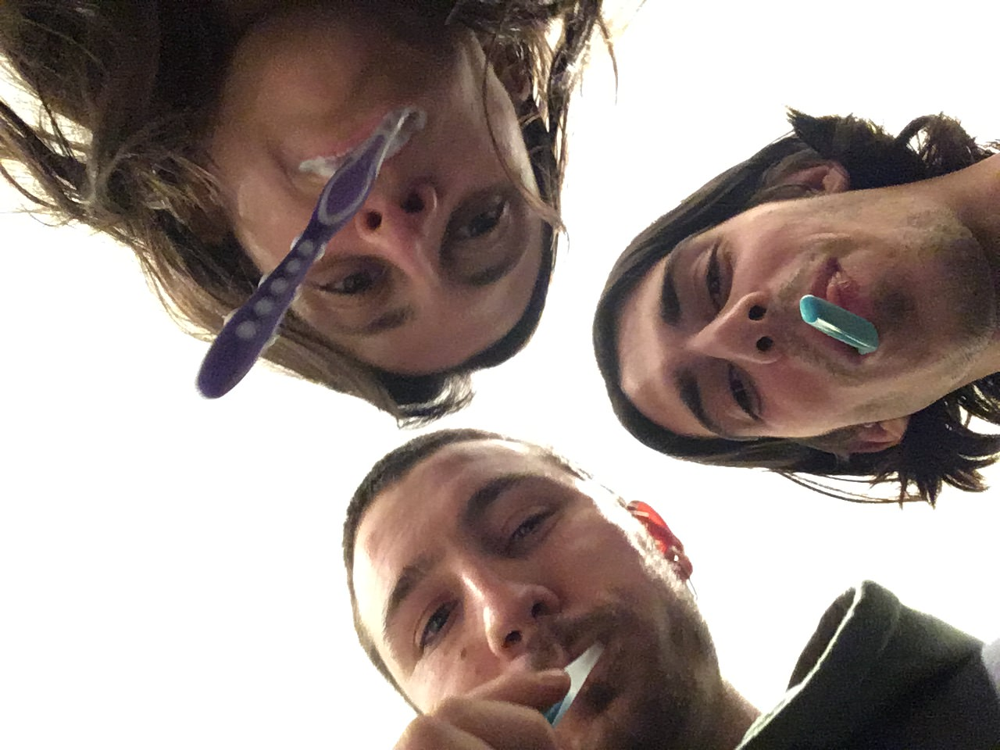
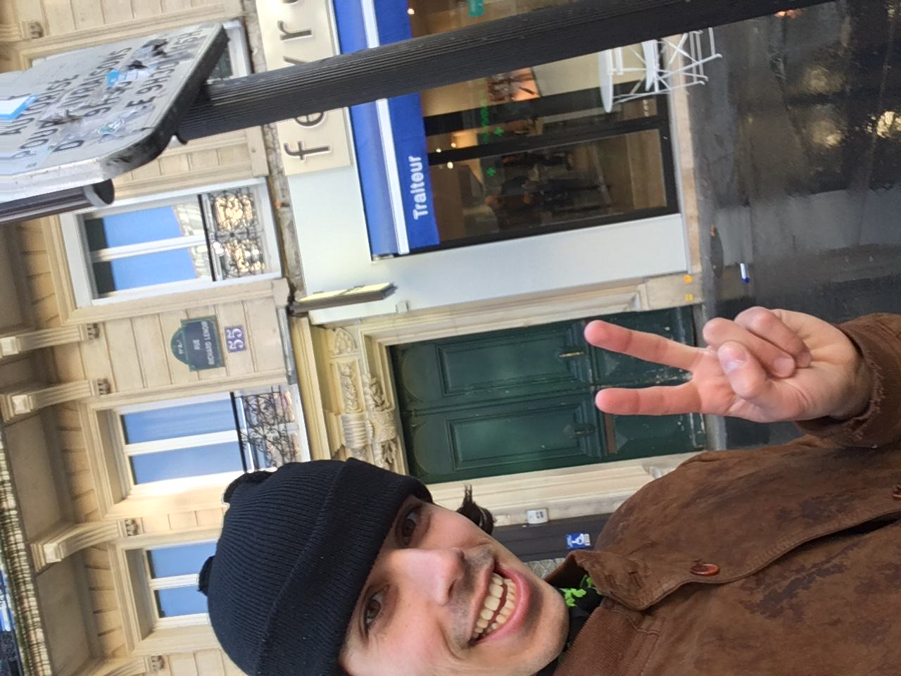

Hola Dani, buenas noches!
Estaba haciendo la colada y me decía que estaría bien tener el cartón que tenías en el taller para plegar las camis, porque tengo un montón (como 20!).
Asique me he acordado de Barcelona. Últimamente he estado con gente que quería visitarla, entonces me acordaba de nuevo de todas las cosas que hicimos en la zona:
- del concierto de Diaphan en la sala Taro, y el restaurante chino al que fuimos entre medias.
- cuando fuimos a Creixel el 23 de junio para San Juan, volviendo por Preixana :D
- Cuando estuvimos allí por el pueblo, el partido de bádminton entre tú y yo en el campo del jefe.
- de vuelta a Barcelona, el tallerlas calles que nos llevaban a él...
- En casa, las cenas con Nabila (tengo que responderle a un mensaje encima)
- Todas las personas de BCN (mucho muchacho también cuenta)
- Cuando volvimos con tu ama y tu abu, y que habia un incendio en una ciudad al lado de la autopista, y que me dejasteis en Val de Bron (verifiacrr)
- Uuuuii y casi se me olvida pero cuando fuí allí para el Prat a por el exprimidor de naranjas jajaj, nose si lo tendrás por ahí hihihi.
Tantas cosas en un sitio tán nuevo y divertido. Toda la gente que hemos conocido entre París y Barcelona...

Y para terminar, te dejé un regalo allí en Barna, y es que te recomiendo (espero que no lo conozcas ya), el parque de Cervantes, cerca del Val de Bron de echo, y a donde fuí en mi último día en la city. Parque de estilo un poco oriente medio, con rosales y palmeras!
(la última vez que pasé por París, pasé por tu antigua kel!)
